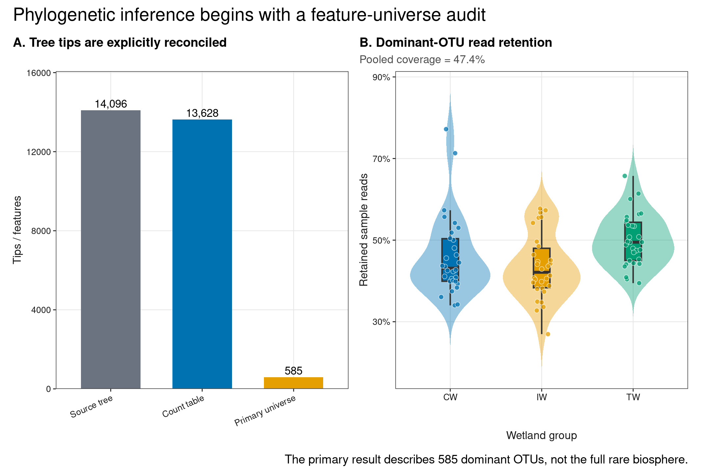
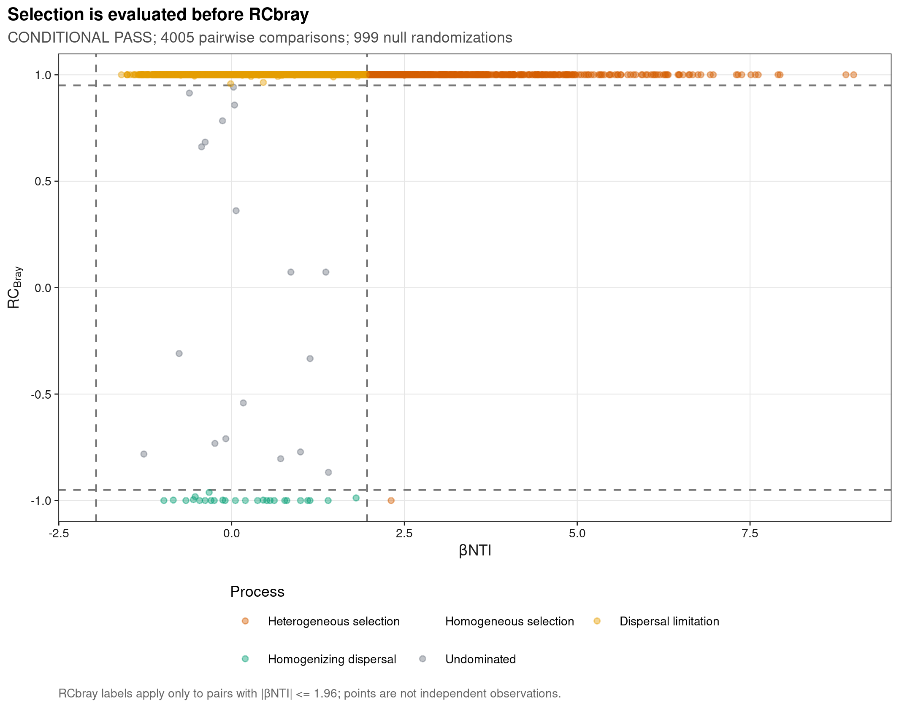
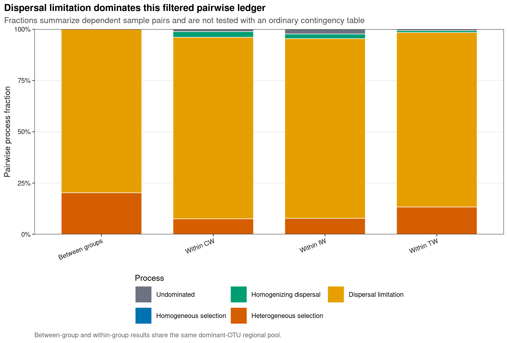
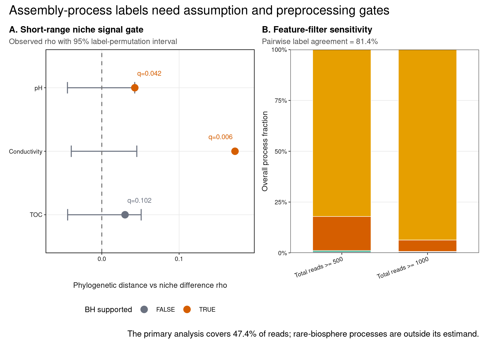

options(timeout = 600)
data_url <- "https://raw.githubusercontent.com/petemeng/microbiome-best-practices/3cb6a817e0c73ab7ecbec1cedc1ad80cbb9ecfaa/"
input_files <- c(
"data/small/environment.tsv",
"data/small/metadata.tsv",
"data/small/otutab.tsv",
"data/small/rooted-tree.nwk.gz",
"data/small/taxonomy.tsv"
)
for (path in input_files) {
dir.create(dirname(path), recursive = TRUE, showWarnings = FALSE)
if (!file.exists(path)) download.file(paste0(data_url, path), path, mode = "wb", quiet = TRUE)
}βNTI + RCbray：确定性与随机过程的条件性证据
βNTI 与 RCbray 提供的是条件性组装证据
Stegen et al. (2013)把 β-nearest taxon index（βNTI）与 abundance-based Raup–Crick（RCbray）串联，用 pairwise phylogenetic 与 taxonomic turnover 条件性区分 selection、dispersal 和 undominated processes。Ning et al. (2020)进一步发展了可扩展的定量框架。下面用公开湿地数据检查 βNTI–RCbray process map、分组 process fractions、系统发育信号和过滤结果。
重要先给结论
βNTI/RCbray 不是从一张 OTU 表直接“测出生态过程”。只有系统树与 feature 精确对齐、局部 phylogenetic signal 得到支持、null model 与 regional pool 合理、随机化充分且过滤敏感性可接受时，process fractions 才能作为条件性证据。它们不是 dispersal rate、selection strength 或因果比例的直接测量。
本页使用 microeco 2.0.0 随数据分发的真实 14,096-tip rooted 16S tree。树覆盖全部 13,628 个 count-table OTU，另有 468 个未进入 count table 的 tips；代码先按当前 feature universe 裁剪，不让 ape 或 iCAMP 静默重排。
下载并读取本次分析的数据
需要 R，以及 ape、ggplot2、iCAMP、knitr、patchwork、ragg、scales、svglite。本次使用中国湿地的 OTU count 表、分类表和样本信息表，以及本次分析使用的实测环境变量或系统发育信息。
在一个新建的文件夹中运行以下代码，下载文件后按文中的顺序继续分析：
library(ggplot2)
library(ape)
library(iCAMP)
set.seed(20260738)
font_pub <- "sans"
pal_pub <- c(
blue = "#0072B2", orange = "#E69F00", green = "#009E73",
vermillion = "#D55E00", purple = "#CC79A7", sky = "#56B4E9",
yellow = "#F0E442", grey = "#6B7280"
)
scale_color_pub <- function(..., values = unname(pal_pub)) {
ggplot2::scale_color_manual(..., values = values)
}
scale_fill_pub <- function(..., values = unname(pal_pub)) {
ggplot2::scale_fill_manual(..., values = values)
}
theme_pub <- function(base_size = 10, base_family = font_pub) {
ggplot2::theme_bw(base_size = base_size, base_family = base_family) +
ggplot2::theme(
panel.grid.minor = ggplot2::element_blank(),
panel.grid.major = ggplot2::element_line(
colour = "#E6E6E6", linewidth = 0.25
),
axis.text = ggplot2::element_text(colour = "#1A1A1A"),
axis.title = ggplot2::element_text(colour = "#1A1A1A"),
axis.ticks = ggplot2::element_line(colour = "#1A1A1A", linewidth = 0.3),
plot.title.position = "plot",
plot.title = ggplot2::element_text(face = "bold", size = ggplot2::rel(1.15)),
plot.subtitle = ggplot2::element_text(colour = "#4D4D4D"),
plot.caption = ggplot2::element_text(colour = "#666666", hjust = 0),
strip.background = ggplot2::element_rect(
fill = "#F2F2F2", colour = "#B3B3B3", linewidth = 0.3
),
strip.text = ggplot2::element_text(face = "bold"),
legend.key = ggplot2::element_blank(), legend.position = "top"
)
}
save_pub <- function(
plot, file_base, width = 89, height = 70, units = "mm",
dpi = 600, write_svg = TRUE, write_tiff = TRUE,
base_family = font_pub
) {
dir.create(dirname(file_base), recursive = TRUE, showWarnings = FALSE)
ggplot2::ggsave(
paste0(file_base, ".pdf"), plot, width = width, height = height,
units = units, device = grDevices::cairo_pdf,
family = base_family, bg = "white"
)
if (write_svg) ggplot2::ggsave(
paste0(file_base, ".svg"), plot, width = width, height = height,
units = units, device = svglite::svglite, bg = "white"
)
ggplot2::ggsave(
paste0(file_base, ".png"), plot, width = width, height = height,
units = units, dpi = dpi, device = ragg::agg_png, bg = "white"
)
if (write_tiff) ggplot2::ggsave(
paste0(file_base, ".tiff"), plot, width = width, height = height,
units = units, dpi = dpi, device = ragg::agg_tiff,
compression = "lzw", bg = "white"
)
invisible(plot)
}读取三件套、环境表与真实有根树
read_keyed_tsv <- function(path) {
x <- readr::read_tsv(
path, show_col_types = FALSE, progress = FALSE,
name_repair = "minimal", na = character()
)
ids <- as.character(x[[1L]])
stopifnot(!anyDuplicated(ids))
out <- as.data.frame(x[-1L], check.names = FALSE)
rownames(out) <- ids
out
}
otutab_raw <- read_keyed_tsv("data/small/otutab.tsv")
taxonomy <- read_keyed_tsv("data/small/taxonomy.tsv")
metadata <- read_keyed_tsv("data/small/metadata.tsv")
environment <- read_keyed_tsv("data/small/environment.tsv")
otutab <- as.matrix(data.frame(
lapply(otutab_raw, as.integer), check.names = FALSE
))
rownames(otutab) <- rownames(otutab_raw)
metadata$Group <- factor(metadata$Group, levels = c("CW", "IW", "TW"))
otutab <- otutab[, rownames(metadata), drop = FALSE]
environment <- environment[rownames(metadata), , drop = FALSE]
full_tree <- ape::read.tree(gzfile("data/small/rooted-tree.nwk.gz"))
tree_tip_contract <- data.frame(
TreeTips = ape::Ntip(full_tree),
CountFeatures = nrow(otutab),
CountFeaturesMissingFromTree = sum(!rownames(otutab) %in% full_tree$tip.label),
TreeTipsOutsideCountTable = sum(!full_tree$tip.label %in% rownames(otutab)),
Rooted = ape::is.rooted(full_tree),
NonPositiveBranches = sum(
!is.finite(full_tree$edge.length) | full_tree$edge.length <= 0
)
)
stopifnot(
nrow(otutab) == 13628L,
ncol(otutab) == 90L,
sum(otutab) == 1619670L,
nrow(taxonomy) == nrow(otutab),
tree_tip_contract$TreeTips == 14096L,
tree_tip_contract$CountFeaturesMissingFromTree == 0L,
tree_tip_contract$TreeTipsOutsideCountTable == 468L,
tree_tip_contract$Rooted
)
tree_tip_contract TreeTips CountFeatures CountFeaturesMissingFromTree TreeTipsOutsideCountTable
1 14096 13628 0 468
Rooted NonPositiveBranches
1 TRUE 1下载完整 R 脚本。脚本包含数据下载、计算和图形导出。
首次使用时安装 R 包
install.packages(c(
"ape", "ggplot2", "iCAMP", "patchwork", "ragg", "readr",
"scales", "svglite", "systemfonts"
))先用 βNTI 判断 selection，再用 RCbray 分流
βMNTD 与 βNTI
Abundance-weighted β mean nearest taxon distance（βMNTD）计算两个样本间每个 taxon 到另一群落最近亲缘 taxon 的距离。Taxon labels 在固定树上随机化后，βNTI 是 observed βMNTD 相对 null mean 的标准化偏离：
\[ \beta NTI = \frac{\beta MNTD_{obs}-\mu(\beta MNTD_{null})} {\sigma(\beta MNTD_{null})}. \]
βNTI > +1.96 表示 turnover 高于 null，常标为 heterogeneous selection；βNTI < -1.96 表示 turnover 低于 null，常标为 homogeneous selection。
只有 |βNTI| 不超过 1.96 才进入 RCbray
当 phylogenetic turnover 没有越过 selection gate，再用 abundance-based RCbray：
RCbray > +0.95：dispersal limitation；RCbray < -0.95：homogenizing dispersal；|RCbray| <= 0.95：undominated，可能混合 weak selection、weak dispersal、drift 与 diversification。
这是一套 operational classification；“undominated”不等于只有 drift，“dispersal limitation”也不是实测迁移率。
为什么必须先查 phylogenetic signal
βNTI 用近缘关系代理 niche similarity。若近缘 taxa 在所研究环境尺度上没有相似 niche，phylogenetic turnover 不能可靠映射到 selection。本页为 retained OTUs 计算 pH、conductivity、TOC 的 abundance-weighted niche optima，在最近 10% phylogenetic distances 内检验“系统距离越大，niche difference 是否越大”，并用 499 次 taxon-label permutation 与三项 BH 控制。
区域类群库与特征过滤会改变零模型的参照
本页主分析预先保留 prevalence ≥10%、total reads ≥500 的 dominant OTUs；这样把运行规模固定为 585 taxa，但只覆盖部分 reads。严格阈值 total reads ≥1000 另行重跑 199 次 null sensitivity。二者估计的是不同 dominant-community universes，不能把 filter-dependent fractions 写成全群落定律。
Parallel null model 也要有确定性随机数流
iCAMP 1.5.12 的公开函数没有 seed 参数，并在内部新建 PSOCK cluster。仅在主进程 set.seed() 不能保证 worker streams 相同。本页复制函数到当前会话并在内部 parLapply() 前插入 clusterSetRNGStream()；不修改安装包 namespace，两次运行可逐值复现。
深入：为什么 process fractions 不能当成样本级独立比例
90 个样本产生 4,005 个 pair，但同一样本参与 89 个 pair，因此 pairwise labels 不是 4,005 个独立观测。堆叠比例是描述性汇总；若要比较组间 fractions，应在 site/subject 层 bootstrap 或采用维护 pair dependence 的层级模型，而不是对 pair labels 做普通卡方检验。
在系统发育假设下计算βNTI与RCbray
确定优势 OTU 集合，并保留对应的树枝
primary_keep <- rowMeans(otutab > 0) >= 0.10 & rowSums(otutab) >= 500
primary_counts <- otutab[primary_keep, , drop = FALSE]
community <- t(primary_counts)
pruned_tree <- ape::keep.tip(full_tree, colnames(community))
phylogenetic_distance <- ape::cophenetic.phylo(pruned_tree)
phylogenetic_distance <- phylogenetic_distance[
colnames(community), colnames(community), drop = FALSE
]
sample_retention <- data.frame(
SampleID = colnames(otutab),
Group = metadata[colnames(otutab), "Group"],
RetainedFraction = colSums(primary_counts) / colSums(otutab),
stringsAsFactors = FALSE
)
stopifnot(
ncol(community) == 585L,
ape::Ntip(pruned_tree) == ncol(community),
setequal(pruned_tree$tip.label, colnames(community)),
identical(rownames(phylogenetic_distance), colnames(community)),
all(is.finite(phylogenetic_distance)),
all(phylogenetic_distance >= 0)
)
data.frame(
RetainedOTUs = ncol(community),
RetainedReadFraction = sum(primary_counts) / sum(otutab),
MinimumSampleRetention = min(sample_retention$RetainedFraction),
MaximumSampleRetention = max(sample_retention$RetainedFraction),
PrunedTreeTips = ape::Ntip(pruned_tree)
) RetainedOTUs RetainedReadFraction MinimumSampleRetention
1 585 0.4741738 0.2696026
MaximumSampleRetention PrunedTreeTips
1 0.7720565 585先检验最近 10% 系统距离的 niche signal
relative_abundance <- sweep(otutab, 2L, colSums(otutab), "/")
retained_relative <- relative_abundance[primary_keep, , drop = FALSE]
taxon_site_weights <- sweep(
retained_relative, 1L, rowSums(retained_relative), "/"
)
distance_index <- which(upper.tri(phylogenetic_distance), arr.ind = TRUE)
pair_distance <- phylogenetic_distance[distance_index]
short_range <- pair_distance <= stats::quantile(pair_distance, 0.10)
short_index <- distance_index[short_range, , drop = FALSE]
short_distance <- pair_distance[short_range]
signal_traits <- c("pH", "Conductivity", "TOC")
set.seed(20260738)
signal_results <- lapply(seq_along(signal_traits), function(trait_index) {
trait <- signal_traits[[trait_index]]
niche_optimum <- as.vector(
taxon_site_weights %*% as.numeric(environment[[trait]])
)
niche_difference <- abs(
niche_optimum[short_index[, "row"]] -
niche_optimum[short_index[, "col"]]
)
observed <- stats::cor(
short_distance, niche_difference, method = "spearman"
)
set.seed(20260738L + trait_index)
null_rho <- replicate(499L, {
permuted <- sample(niche_optimum)
stats::cor(
short_distance,
abs(
permuted[short_index[, "row"]] -
permuted[short_index[, "col"]]
),
method = "spearman"
)
})
data.frame(
Trait = trait,
ObservedRho = observed,
NullLower = stats::quantile(null_rho, 0.025),
NullMedian = stats::median(null_rho),
NullUpper = stats::quantile(null_rho, 0.975),
PValue = (1 + sum(null_rho >= observed)) / 500,
ShortRangePairs = length(short_distance),
stringsAsFactors = FALSE
)
})
signal_results <- do.call(rbind, signal_results)
signal_results$QValue <- stats::p.adjust(signal_results$PValue, method = "BH")
signal_results$Supported <- signal_results$ObservedRho > 0 &
signal_results$QValue < 0.05
phylogenetic_signal_gate <- if (
sum(signal_results$Supported) >= 2L
) "CONDITIONAL PASS" else "FAIL"
signal_results Trait ObservedRho NullLower NullMedian NullUpper PValue
2.5% pH 0.04269054 -0.04440469 -0.0007388548 0.04262020 0.028
2.5%1 Conductivity 0.17225367 -0.03947050 -0.0001770700 0.04528549 0.002
2.5%2 TOC 0.03006616 -0.04415424 0.0013572020 0.05092055 0.102
ShortRangePairs QValue Supported
2.5% 17083 0.042 TRUE
2.5%1 17083 0.006 TRUE
2.5%2 17083 0.102 FALSE为 iCAMP 的并行计算固定随机数流
seed_icamp_function <- function(fun, target, seed) {
function_text <- paste(deparse(fun), collapse = "\n")
replacement <- paste0(
"parallel::clusterSetRNGStream(c1, iseed = ",
as.integer(seed), "L)\n ", target
)
stopifnot(grepl(target, function_text, fixed = TRUE))
function_text <- sub(
target, replacement, function_text, fixed = TRUE
)
seeded_function <- eval(
parse(text = function_text), envir = environment(fun)
)
environment(seeded_function) <- environment(fun)
seeded_function
}
seeded_bnti <- seed_icamp_function(
iCAMP::bNTI.cm,
"bMNTD.rand <- parallel::parLapply",
20260738L
)
seeded_rcbray <- seed_icamp_function(
iCAMP::RC.cm,
"BC.rd <- parallel::parLapply",
20261738L
)
n_workers <- max(
1L,
min(8L, parallel::detectCores(logical = FALSE))
)
# Small double-run probe: same seed and worker count must be byte-identical.
probe_community <- community[, head(colnames(community), 40L), drop = FALSE]
probe_distance <- phylogenetic_distance[
colnames(probe_community), colnames(probe_community), drop = FALSE
]
probe_one <- seeded_bnti(
comm = probe_community,
dis = probe_distance,
nworker = n_workers,
weighted = TRUE,
rand = 9L,
output.bMNTD = FALSE,
sig.index = "SES"
)$index
probe_two <- seeded_bnti(
comm = probe_community,
dis = probe_distance,
nworker = n_workers,
weighted = TRUE,
rand = 9L,
output.bMNTD = FALSE,
sig.index = "SES"
)$index
stopifnot(identical(probe_one, probe_two))正式运行 999 次 βNTI 与 RCbray null models
primary_randomizations <- 999L
bnti_fit <- seeded_bnti(
comm = community,
dis = phylogenetic_distance,
nworker = n_workers,
weighted = TRUE,
rand = primary_randomizations,
output.bMNTD = TRUE,
sig.index = "SES"
)
rcbray_fit <- seeded_rcbray(
comm = community,
nworker = n_workers,
weighted = TRUE,
rand = primary_randomizations,
sig.index = "RC",
output.bray = TRUE,
silent = TRUE
)
bnti_matrix <- bnti_fit$index
rcbray_matrix <- rcbray_fit$index
pair_index <- which(lower.tri(bnti_matrix), arr.ind = TRUE)
assembly_pairs <- data.frame(
Sample1 = rownames(bnti_matrix)[pair_index[, "row"]],
Sample2 = colnames(bnti_matrix)[pair_index[, "col"]],
BetaNTI = bnti_matrix[pair_index],
RCbray = rcbray_matrix[pair_index],
BrayCurtis = rcbray_fit$BC.obs[pair_index],
stringsAsFactors = FALSE
)
assembly_pairs$Group1 <- metadata[assembly_pairs$Sample1, "Group"]
assembly_pairs$Group2 <- metadata[assembly_pairs$Sample2, "Group"]
assembly_pairs$PairScope <- ifelse(
assembly_pairs$Group1 == assembly_pairs$Group2,
paste("Within", assembly_pairs$Group1),
"Between groups"
)
classify_process <- function(beta_nti, rcbray) {
ifelse(
beta_nti > 1.96, "Heterogeneous selection",
ifelse(
beta_nti < -1.96, "Homogeneous selection",
ifelse(
rcbray > 0.95, "Dispersal limitation",
ifelse(
rcbray < -0.95, "Homogenizing dispersal", "Undominated"
)
)
)
)
}
assembly_pairs$Process <- classify_process(
assembly_pairs$BetaNTI, assembly_pairs$RCbray
)
process_levels <- c(
"Heterogeneous selection", "Homogeneous selection",
"Dispersal limitation", "Homogenizing dispersal", "Undominated"
)
assembly_pairs$Process <- factor(
assembly_pairs$Process, levels = process_levels
)
assembly_pairs$PairScope <- factor(
assembly_pairs$PairScope,
levels = c("Within CW", "Within IW", "Within TW", "Between groups")
)
process_fraction <- as.data.frame(
prop.table(table(assembly_pairs$PairScope, assembly_pairs$Process), 1L),
stringsAsFactors = FALSE
)
names(process_fraction) <- c("PairScope", "Process", "Fraction")
stopifnot(
nrow(assembly_pairs) == choose(90L, 2L),
all(is.finite(assembly_pairs$BetaNTI)),
all(assembly_pairs$RCbray >= -1 & assembly_pairs$RCbray <= 1),
abs(sum(prop.table(table(assembly_pairs$Process))) - 1) < 1e-12
)
as.data.frame(prop.table(table(assembly_pairs$Process))) Var1 Freq
1 Heterogeneous selection 0.168039950
2 Homogeneous selection 0.000000000
3 Dispersal limitation 0.820973783
4 Homogenizing dispersal 0.006491885
5 Undominated 0.004494382用更严格 feature filter 重跑敏感性
strict_keep <- rowMeans(otutab > 0) >= 0.10 & rowSums(otutab) >= 1000
strict_community <- t(otutab[strict_keep, , drop = FALSE])
strict_tree <- ape::keep.tip(full_tree, colnames(strict_community))
strict_distance <- ape::cophenetic.phylo(strict_tree)
strict_distance <- strict_distance[
colnames(strict_community), colnames(strict_community), drop = FALSE
]
seeded_bnti_strict <- seed_icamp_function(
iCAMP::bNTI.cm,
"bMNTD.rand <- parallel::parLapply",
202607381L
)
seeded_rcbray_strict <- seed_icamp_function(
iCAMP::RC.cm,
"BC.rd <- parallel::parLapply",
202617381L
)
strict_randomizations <- 199L
strict_bnti <- seeded_bnti_strict(
comm = strict_community,
dis = strict_distance,
nworker = n_workers,
weighted = TRUE,
rand = strict_randomizations,
output.bMNTD = FALSE,
sig.index = "SES"
)$index
strict_rcbray <- seeded_rcbray_strict(
comm = strict_community,
nworker = n_workers,
weighted = TRUE,
rand = strict_randomizations,
sig.index = "RC",
silent = TRUE
)$index
strict_process <- classify_process(
strict_bnti[pair_index], strict_rcbray[pair_index]
)
filter_process_agreement <- mean(
strict_process == as.character(assembly_pairs$Process)
)
filter_sensitivity <- rbind(
data.frame(
Filter = "Total reads >= 500",
OTUs = sum(primary_keep),
ReadFraction = sum(otutab[primary_keep, ]) / sum(otutab),
Randomizations = primary_randomizations,
Process = levels(assembly_pairs$Process),
Fraction = as.numeric(prop.table(table(assembly_pairs$Process))),
stringsAsFactors = FALSE
),
data.frame(
Filter = "Total reads >= 1000",
OTUs = sum(strict_keep),
ReadFraction = sum(otutab[strict_keep, ]) / sum(otutab),
Randomizations = strict_randomizations,
Process = process_levels,
Fraction = as.numeric(prop.table(table(factor(
strict_process, levels = process_levels
)))),
stringsAsFactors = FALSE
)
)
data.frame(
PrimaryOTUs = sum(primary_keep),
StrictOTUs = sum(strict_keep),
PrimaryReadFraction = sum(otutab[primary_keep, ]) / sum(otutab),
StrictReadFraction = sum(otutab[strict_keep, ]) / sum(otutab),
PairwiseProcessAgreement = filter_process_agreement
) PrimaryOTUs StrictOTUs PrimaryReadFraction StrictReadFraction
1 585 220 0.4741738 0.319738
PairwiseProcessAgreement
1 0.8142322阈值、树和 null model 怎样改变组装比例？
bnti_audit <- data.frame(
Dimension = c(
"Tree", "Phylogenetic signal", "Regional pool", "Feature filter",
"Randomization", "Sequential gate", "Pair dependence", "Claim"
),
FragilePractice = c(
"Taxonomy tree or unmatched tips",
"Assume close relatives share niches",
"Mix unrelated habitats without definition",
"Hide retained read fraction",
"Parallel workers without seeded streams",
"Use RCbray even when |bNTI| > 1.96",
"Treat all sample pairs as independent",
"Call fractions measured mechanisms"
),
UpgradedContract = c(
"Rooted branch-length tree plus exact tip audit",
"Short-range niche-signal gate",
"Declare metacommunity and pair scope",
"Primary plus strict filter ledger",
"999 nulls with deterministic cluster RNG",
"Selection gate before RCbray",
"Descriptive fractions or sample-level resampling",
"Conditional process evidence"
),
stringsAsFactors = FALSE
)
knitr::kable(bnti_audit, caption = "βNTI/RCbray interpretation audit")| Dimension | FragilePractice | UpgradedContract |
|---|---|---|
| Tree | Taxonomy tree or unmatched tips | Rooted branch-length tree plus exact tip audit |
| Phylogenetic signal | Assume close relatives share niches | Short-range niche-signal gate |
| Regional pool | Mix unrelated habitats without definition | Declare metacommunity and pair scope |
| Feature filter | Hide retained read fraction | Primary plus strict filter ledger |
| Randomization | Parallel workers without seeded streams | 999 nulls with deterministic cluster RNG |
| Sequential gate | Use RCbray even when |bNTI| > 1.96 | Selection gate before RCbray |
| Pair dependence | Treat all sample pairs as independent | Descriptive fractions or sample-level resampling |
| Claim | Call fractions measured mechanisms | Conditional process evidence |
主模型保留 585 个 OTU 和 47.4% reads。最近 10% 系统距离的三个预设 niche-signal tests 中，2 个在 BH 后为正且显著，解释门禁为 CONDITIONAL PASS。因此 process labels 可以作为 dominant-community、当前 regional pool 和当前环境尺度下的条件性结果，但不升级为因果过程比例。
严格过滤仅保留 220 个 OTU、32.0% reads；与主模型的 pairwise process agreement 为 81.4%。若关键结论随 filter 明显变化，投稿时应扩大计算资源、降低过滤并报告完整 sensitivity grid。
解释组装比例前先检查null model
图 1：检查树上的特征覆盖了多少读数
tree_counts <- data.frame(
Stage = factor(
c("Source tree", "Count table", "Primary universe"),
levels = c("Source tree", "Count table", "Primary universe")
),
Tips = c(ape::Ntip(full_tree), nrow(otutab), sum(primary_keep))
)
tree_panel <- ggplot(tree_counts, aes(x = Stage, y = Tips, fill = Stage)) +
geom_col(width = 0.65, show.legend = FALSE) +
geom_text(
aes(label = scales::comma(Tips)),
vjust = -0.35, family = font_pub, size = 2.8
) +
scale_fill_manual(values = unname(pal_pub[c("grey", "blue", "orange")])) +
scale_y_continuous(expand = expansion(mult = c(0, 0.14))) +
labs(
title = "A. Tree tips are explicitly reconciled",
x = NULL, y = "Tips / features"
) +
theme_pub(base_size = 8.0) +
theme(axis.text.x = element_text(angle = 24, hjust = 1))
retention_panel <- ggplot(
sample_retention,
aes(x = Group, y = RetainedFraction, fill = Group)
) +
geom_violin(trim = FALSE, alpha = 0.40, colour = NA) +
geom_boxplot(width = 0.18, outlier.shape = NA, colour = "#333333") +
geom_jitter(
width = 0.10, shape = 21, size = 1.5,
colour = "white", stroke = 0.25, alpha = 0.75
) +
scale_fill_manual(values = c(
CW = pal_pub[["blue"]], IW = pal_pub[["orange"]], TW = pal_pub[["green"]]
)) +
scale_y_continuous(labels = scales::label_percent()) +
labs(
title = "B. Dominant-OTU read retention",
subtitle = sprintf("Pooled coverage = %.1f%%", 100 * sum(primary_counts) / sum(otutab)),
x = "Wetland group", y = "Retained sample reads"
) +
theme_pub(base_size = 8.0) +
theme(legend.position = "none")
tree_filter_plot <- patchwork::wrap_plots(
tree_panel, retention_panel, nrow = 1L
) +
patchwork::plot_annotation(
title = "Phylogenetic inference begins with a feature-universe audit",
caption = "The primary result describes 585 dominant OTUs, not the full rare biosphere."
)
save_pub(tree_filter_plot, "figures/38-tree-filter", width = 180, height = 122)
tree_filter_plot
图 2：按 βNTI 和 RCbray 依次判断群落构建过程
process_colours <- c(
"Heterogeneous selection" = pal_pub[["vermillion"]],
"Homogeneous selection" = pal_pub[["blue"]],
"Dispersal limitation" = pal_pub[["orange"]],
"Homogenizing dispersal" = pal_pub[["green"]],
"Undominated" = pal_pub[["grey"]]
)
bnti_rc_plot <- ggplot(
assembly_pairs,
aes(x = BetaNTI, y = RCbray, colour = Process)
) +
geom_hline(yintercept = c(-0.95, 0.95), linetype = 2, colour = "#777777") +
geom_vline(xintercept = c(-1.96, 1.96), linetype = 2, colour = "#777777") +
geom_point(size = 1.25, alpha = 0.42) +
scale_colour_manual(values = process_colours, drop = FALSE) +
coord_cartesian(ylim = c(-1, 1)) +
labs(
title = "Selection is evaluated before RCbray",
subtitle = sprintf(
"%s; %d pairwise comparisons; %d null randomizations",
phylogenetic_signal_gate, nrow(assembly_pairs), primary_randomizations
),
x = expression(beta * "NTI"), y = expression("RC"[Bray]),
colour = "Process",
caption = "RCbray labels apply only to pairs with |βNTI| <= 1.96; points are not independent observations."
) +
theme_pub(base_size = 8.5) +
theme(legend.position = "bottom", legend.box = "vertical") +
guides(colour = guide_legend(nrow = 2, byrow = TRUE, title.position = "top"))
save_pub(bnti_rc_plot, "figures/38-bnti-rcbray", width = 180, height = 148)
bnti_rc_plot
图 3：比较不同样本配对范围内的过程占比
process_fraction$Process <- factor(
process_fraction$Process, levels = rev(process_levels)
)
process_fraction_plot <- ggplot(
process_fraction,
aes(x = PairScope, y = Fraction, fill = Process)
) +
geom_col(width = 0.72, colour = "white", linewidth = 0.25) +
scale_fill_manual(values = process_colours, drop = FALSE) +
scale_y_continuous(labels = scales::label_percent(), expand = c(0, 0)) +
labs(
title = "Dispersal limitation dominates this filtered pairwise ledger",
subtitle = "Fractions summarize dependent sample pairs and are not tested with an ordinary contingency table",
x = NULL, y = "Pairwise process fraction", fill = "Process",
caption = "Between-group and within-group results share the same dominant-OTU regional pool."
) +
theme_pub(base_size = 8.3) +
theme(
axis.text.x = element_text(angle = 22, hjust = 1),
legend.position = "bottom", legend.box = "vertical"
) +
guides(fill = guide_legend(nrow = 2, byrow = TRUE, title.position = "top"))
save_pub(
process_fraction_plot, "figures/38-process-fractions",
width = 180, height = 132
)
process_fraction_plot
图 4：phylogenetic-signal 与 filter sensitivity
signal_results$Trait <- factor(
signal_results$Trait, levels = rev(signal_traits)
)
signal_panel <- ggplot(
signal_results,
aes(x = ObservedRho, y = Trait, colour = Supported)
) +
geom_errorbarh(
aes(xmin = NullLower, xmax = NullUpper),
height = 0.18, colour = pal_pub[["grey"]]
) +
geom_vline(xintercept = 0, linetype = 2, colour = "#777777") +
geom_point(size = 3) +
geom_text(
aes(
label = sprintf("q=%.3f", QValue),
hjust = ifelse(ObservedRho > 0.12, 1.1, -0.1)
),
nudge_y = 0.23, family = font_pub, size = 2.5,
show.legend = FALSE
) +
scale_colour_manual(values = c(
"FALSE" = pal_pub[["grey"]], "TRUE" = pal_pub[["vermillion"]]
)) +
labs(
title = "A. Short-range niche signal gate",
subtitle = "Observed rho with 95% label-permutation interval",
x = "Phylogenetic distance vs niche difference rho", y = NULL,
colour = "BH supported"
) +
theme_pub(base_size = 8.0) +
theme(legend.position = "bottom") +
coord_cartesian(xlim = c(-0.06, 0.185), clip = "off")
filter_sensitivity$Filter <- factor(
filter_sensitivity$Filter,
levels = c("Total reads >= 500", "Total reads >= 1000")
)
filter_panel <- ggplot(
filter_sensitivity,
aes(x = Filter, y = Fraction, fill = Process)
) +
geom_col(width = 0.68, colour = "white", linewidth = 0.25) +
scale_fill_manual(values = process_colours, drop = FALSE) +
scale_y_continuous(labels = scales::label_percent(), expand = c(0, 0)) +
labs(
title = "B. Feature-filter sensitivity",
subtitle = sprintf("Pairwise label agreement = %.1f%%", 100 * filter_process_agreement),
x = NULL, y = "Overall process fraction", fill = "Process"
) +
theme_pub(base_size = 8.0) +
theme(
axis.text.x = element_text(angle = 20, hjust = 1),
legend.position = "none"
)
signal_filter_plot <- patchwork::wrap_plots(
signal_panel, filter_panel, nrow = 1L, widths = c(1.05, 0.95)
) +
patchwork::plot_annotation(
title = "Assembly-process labels need assumption and preprocessing gates",
caption = "The primary analysis covers 47.4% of reads; rare-biosphere processes are outside its estimand."
)
save_pub(
signal_filter_plot, "figures/38-phylogenetic-signal",
width = 180, height = 127
)
signal_filter_plot
result_dir <- "results/38-community-assembly-bnti"
dir.create(result_dir, recursive = TRUE, showWarnings = FALSE)
utils::write.table(
tree_tip_contract,
file.path(result_dir, "tree-tip-contract.tsv"),
sep = "\t", quote = FALSE, row.names = FALSE
)
utils::write.table(
signal_results,
file.path(result_dir, "phylogenetic-signal.tsv"),
sep = "\t", quote = FALSE, row.names = FALSE
)
utils::write.table(
assembly_pairs,
file.path(result_dir, "pairwise-process-ledger.tsv"),
sep = "\t", quote = FALSE, row.names = FALSE
)
utils::write.table(
filter_sensitivity,
file.path(result_dir, "filter-sensitivity.tsv"),
sep = "\t", quote = FALSE, row.names = FALSE
)
expected_bases <- c(
"figures/38-tree-filter",
"figures/38-bnti-rcbray",
"figures/38-process-fractions",
"figures/38-phylogenetic-signal"
)
expected_files <- as.vector(outer(
expected_bases, c(".pdf", ".svg", ".png", ".tiff"), paste0
))
stopifnot(
all(file.exists(expected_files)),
as.character(utils::packageVersion("iCAMP")) == "1.5.12",
primary_randomizations == 999L,
strict_randomizations == 199L,
nrow(assembly_pairs) == 4005L,
sum(primary_keep) == 585L,
sum(strict_keep) == 220L,
identical(probe_one, probe_two),
phylogenetic_signal_gate == "CONDITIONAL PASS"
)
注意常见坑：审稿人会追问的九件事
- 用 taxonomy 层级拼一棵树：βNTI 需要有枝长的系统树，不是分类字符串。
- tip names 静默丢失：先报告 missing/extra tips，再显式裁树。
- 不检查 phylogenetic signal：没有近缘 niche conservatism 时，selection 映射缺少关键前提。
- 把少量 null runs 当正式结果：主分析至少 999 次，并报告随机数算法与 seed。
- 并行只写
set.seed()：worker stream 也必须被显式固定。
- 所有 pair 都同时读 βNTI 和 RCbray：RCbray 只分流未越过 selection gate 的 pairs。
- 隐藏 dominant-taxa filter：报告 taxa 数、总 reads coverage 和逐样本 coverage。
- 把 4,005 pairs 当独立样本做普通检验：同一样本重复参与多对比较。
- 把 process label 写成因果比例：它是 null-model-dependent、pool-dependent 的 operational evidence。
报告群落构建模型与条件假设的方法与限制
The OTU table, taxonomy and metadata were read independently and aligned to the rooted branch-length phylogeny distributed with the same
microeco 2.0.0dataset. The source tree contained 14,096 tips, included all 13,628 count-table OTUs and had 468 extra tips, which were explicitly pruned. The primary dominant-OTU universe required prevalence ≥10% and total abundance ≥500 reads, retaining 585 OTUs and 47.4% of all reads. Before process attribution, short-range phylogenetic signal was evaluated for abundance-weighted pH, conductivity and TOC optima among the closest 10% of phylogenetic distances using 499 taxon-label permutations and Benjamini–Hochberg adjustment. Abundance-weighted βNTI and RCbray were then estimated with 999 null randomizations usingiCAMP 1.5.12; deterministic L’Ecuyer worker streams were injected withclusterSetRNGStreambefore each internal parallel loop. Pairs with βNTI >1.96 or <−1.96 were assigned to heterogeneous or homogeneous selection, respectively. Remaining pairs were assigned to dispersal limitation (RCbray >0.95), homogenizing dispersal (RCbray <−0.95), or undominated processes. A stricter ≥1,000-read universe was refitted with 199 null randomizations as a preprocessing sensitivity analysis. Random seeds were fixed at 20260738 and documented in the result ledger.
将群落构建模型与条件假设用于自己的研究
otutab <- read_keyed_tsv("your_data/otutab.tsv")
taxonomy <- read_keyed_tsv("your_data/taxonomy.tsv")
metadata <- read_keyed_tsv("your_data/metadata.tsv")
environment <- read_keyed_tsv("your_data/environment.tsv")
full_tree <- ape::read.tree("your_data/rooted-tree.nwk")
# 必须先通过：
stopifnot(all(rownames(otutab) %in% full_tree$tip.label))
stopifnot(ape::is.rooted(full_tree))
# 必须预先定义 regional pool、过滤与环境信号变量：
prevalence_cutoff <- 0.10
total_read_cutoff <- 500L
signal_traits <- c("pH", "Conductivity", "TOC")如果 feature 是 ASV，优先使用同一区域 sequence alignment 建树或 reference placement；不要把 SILVA taxonomy 层级当作 phylogenetic distance。若研究有多个分离的 region、season 或 host compartment，应分别定义合理 metacommunity pool，并把 pool definition sensitivity 纳入补充材料。
参考
- Stegen JC, Lin X, Fredrickson JK, et al. Quantifying community assembly processes and identifying features that impose them. ISME Journal. 2013;7:2069–2079. https://doi.org/10.1038/ismej.2013.93
- Stegen JC, Lin X, Fredrickson JK, Konopka AE. Estimating and mapping ecological processes influencing microbial community assembly. Frontiers in Microbiology. 2015;6:370. https://doi.org/10.3389/fmicb.2015.00370
- Ning D, Yuan M, Wu L, et al. A quantitative framework reveals ecological drivers of grassland microbial community assembly in response to warming. Nature Communications. 2020;11:4717. https://doi.org/10.1038/s41467-020-18560-z
- Wang J, Shen J, Wu Y, et al. Phylogenetic beta diversity in bacterial assemblages across ecosystems: deterministic versus stochastic processes. ISME Journal. 2013;7:1310–1321. https://doi.org/10.1038/ismej.2013.30
- An J, Liu C, Wang Q, et al. Soil bacterial community structure in Chinese wetlands. Geoderma. 2019;337:290–299. https://doi.org/10.1016/j.geoderma.2018.09.035
- Liu C, Cui Y, Li X, Yao M. microeco: an R package for data mining in microbial community ecology. FEMS Microbiology Ecology. 2021;97:fiaa255. https://doi.org/10.1093/femsec/fiaa255